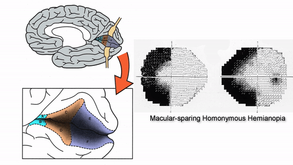

Localizing The Lesion
- Determining the location of the lesion by analyzing the pattern of visual field defects
-
Step 1:
look at the clusters of high-threshold points and try to determine if they suggest non-localizing defects, nerve fiber bundle defects, or hemianopic defects
-
Non-localizing defects
- May derive from lesions of the outer retina, to be correlated with features evident on ophthalmoscopy or on ancillary retinal studies
- Alternatively, the defects may be so large, small, or scattered that localizing features are not evident
-
Nerve fiber bundle defects
- Pattern conforms to the maculopapillar, arcuate, or radial organization of the retinal nerve fiber layer
- Can be either central, centrocecal, arcuate, altitudinal, or temporal wedge scotomas
- Derive from lesions of the retinal ganglion cells or their axons

-
Hemianopic defects
- One border is always aligned to the vertical meridian passing through fixation
- Bitemporal hemianopias: the defects are confined to opposite sides of visual space; they derive from lesions of the chiasmal region
- Homonymous hemianopias: the defects are confined to the same side of visual space in the two eyes; they derive from lesions of the retrochiasmal region


-
Non-localizing defects
-
Step 2:
if you think there is a nerve fiber bundle defect, decide what kind
-
Central or centrocecal scotomas
- Damage to the papillomacular bundle
- Usually produced by an optic nerve lesion, but can also be produced by a macular lesion
-
Arcuate or altitudinal scotomas
- Damage to bundles that originate in the temporal retina and arch over the papillomacular bundles to enter the superior and inferior poles of optic disc
- Usually caused by optic nerve lesions, but could also be caused by inner retinal lesions

-
Temporal wedge scotomas
- Damage to the retinal bundles that originate in the nasal retina and travel radially into the nasal portion of the optic disc
- Usually caused by optic nerve dysplasias


-
Central or centrocecal scotomas
-
Bitemporal hemianopia
- Damage to the chiasmal crossing axon
- Caused by optic chiasm lesions, usually masses
-
Unilateral temporal hemianopia in one eye and a normal visual field in the other eye
- Damage to the optic nerve as it approaches the optic chiasm
- Usually caused by mass lesions or inflammations
-
Temporal hemianopia in one eye and a nerve fiber bundle defect in the other eye
- Damage to the optic nerve at its junction with the optic chiasm
- Usually caused by mass lesions or inflammations

-
Complete homonymous hemianopia
- Damage anywhere within the retrochiasmal visual pathway
- May be caused by mass lesions, inflammations, or strokes
-
Incongruous homonymous hemianopia
- Defects are of different size and depth in the two eyes
- Produced by optic tract mass lesions or inflammations
-
Hourglass sectoranopia
- Damage to the lateral geniculate body
- Caused by anterior choroidal artery occlusion
-
Tip: this is a very rare defect; lesions affecting the lateral geniculate body, a small structure, usually destroy it entirely, causing a complete homonymous hemianopia
-
Hourglass silhouette sectoranopia
- Damage to the lateral geniculate body
- Caused by lateral posterior choroidal artery occlusion
-
Tip: this is a very rare defect; lesions affecting the lateral geniculate body, a small structure, usually destroy it entirely, causing a complete homonymous hemianopia
-
“Pie-in-the-sky” defects
- One border is aligned to the vertical meridian and the other border extends radially into the superior visual field
- Produced by anterior temporal lobe (Meyer’s loop) lesions, usually temporal lobectomy
-
Tip: patients are usually unaware of these defects unless they extend far downward in the visual field
-
Congruous homonymous hemianopia
- Defects are of the same size and depth in the two eyes
- Produced by lesions of the posterior optic radiations or visual cortex, usually strokes
-
Tip: left hemisphere lesions may be associated with pure alexia; right hemisphere lesions may be associated with route-finding difficulty
-
Inferior homonymous quadrantanopia
- Defect borders are aligned to the vertical and horizontal meridians in the inferior visual field
- Produced by superior primary visual cortex lesions, usually strokes
-
Superior homonymous quadrantanopia
- Defect borders are aligned to the vertical and horizontal meridians in the superior visual field
- Produced by inferior primary visual cortex lesions, usually strokes
-
Homonymous paracentral scotomas
- Defects are confined to the central 10 degrees of the visual field
- Produced by lesions that involve the posterior visual cortex, usually strokes
-
Tip: these small defects are easily overlooked by standard perimetric protocols but cause major visual difficulty, especially with reading
-
Macular-sparing homonymous hemianopia
- Defects spare the central 10 degrees of the visual field
- Produced by lesions that spare posterior visual cortex, usually strokes or masses
-
Tip: macular sparing often preserves reading speed and gives patients a false sense that their visual field is adequate for safe driving
-
Temporal crescent-sparing homonymous hemianopia
- Defects spare the peripheral 30 degrees of the temporal field in one eye
- Produced by visual cortex lesions that spare the far anterior visual cortex
-
Tip: this sparing is insufficient to allow safe driving, although the patient may believe so
-
Unilateral temporal crescent defect
- Defect is confined to the unpaired peripheral temporal field of one eye
- Produced by anterior visual cortex lesions, usually strokes
-
Tip: this rare visual field defect, which is not a homonymous hemianopia, is often overlooked by standard threshold bowl perimetry protocols, which do not assess the peripheral field; this defect probably does not compromise safe driving


